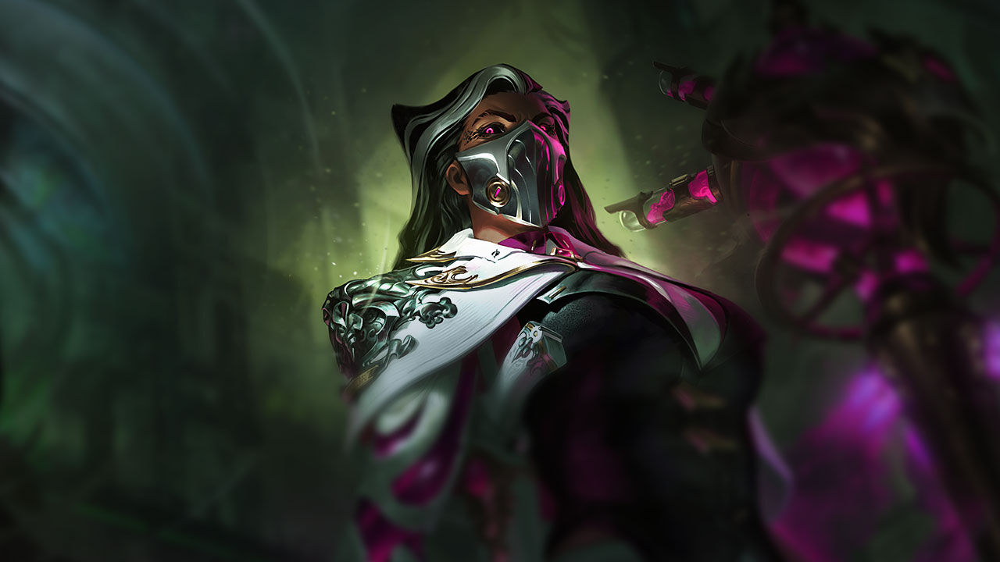

League of Legends (abreviado como LoL) é um jogo eletrônico online gratuito, do gênero batalha multijogador, desenvolvido e publicado pela Riot Games em 2009, para os sistemas Microsoft Windows e Mac OS X, inspirado no modo “Defense of the Ancients” do jogo “Warcraft III: The Frozen Throne”.
Os jogadores assumem o papel de "invocadores", que controlam campeões com habilidades únicas, que formam um time e lutam contra o time adversário de outros invocadores ou controlados pelo computador. No modo mais popular do jogo, o objetivo de cada time é destruir o Nexus da equipe adversária, uma construção localizada na base e protegida por outras estruturas. Cada partida de League of Legends é distinta, pois os campeões sempre começam fracos e progridem através da acumulação de ouro e da experiência ao longo do jogo.
ÚLTIMO LANÇAMENTO
RENATA GLASC
Renata Glasc ressurgiu das cinzas da casa onde vivera quando criança sem nada além do próprio nome e das pesquisas de seus pais em alquimia. Nas décadas que se seguiram, tornou-se a Baronesa da Química mais rica de Zaun, uma magnata extremamente influente que conquistou o poder atando os interesses de todos aos próprios. Trabalhe com ela e receba recompensas imensuráveis. Trabalhe contra ela e conheça o arrependimento. Mais cedo ou mais tarde, porém, todos acabam se unindo a ela.